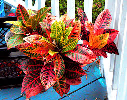

Croton

Croton (Codiaeum de la famille des Euphorbiacées)
Attention : hautement toxique par ingestion pour le Korat !
Partie toxique pour les chats en général et le Korat en particulier :
Sève incolore et Ecorce et racine.
Symptômes du processus pathologique :
Vomissements, diarrhées également hyperthermie et de la tachycardie. Brûlures, en particulier au niveau des muqueuses de la gueule, dues au latex contenu dans la sève. Tremblements musculaires et une dilatation des pupilles.
Origine de la toxicité (principe actif) :
Diterpène, huile de croton.